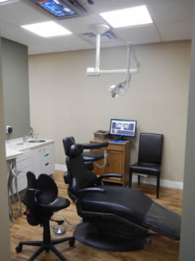
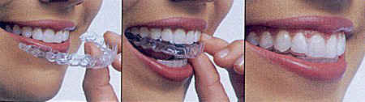
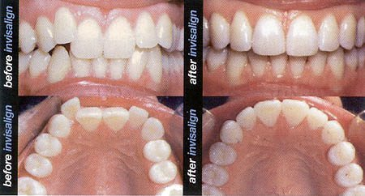
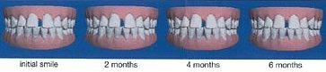
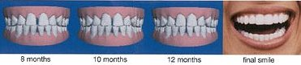

Cosmetic Dentistry
Bleaching
Bleaching
is one way that can be used to whiten
teeth. There are a few different methods
that our office uses to bleach teeth.
They are :
1. In-Office Whitening - you may have
heard of the Brite-Smile® or Zoom®
Whitening. Both these whitening techniques
are used in our office. After isolating
the teeth, a whitening solution is applied
to the teeth. A special light is then used
to activate the bleach. This process
whitens the teeth in a little over one
hour. Zoom® and Brite-Smile® have both
been seen on TV on such shows as "Extreme
Make-over ".The advantage to these
techniques is that you achieve a great
result in just one hour. You can find out
more information on these techniques on
their websites:
www.britesmile.com
and
www.zoomnow.com
2. Take-home Whitening - custom
made whitening trays are made from models
of your teeth. These trays and a whitening
solution are given to the patient to use
at home. The bleaching solution is easily
applied to the inside of the trays. The
trays are worn for at least two hours a
day. Typically it will take two or three
weeks to achieve the desired results.
3.
Non-Vital Bleaching - some teeth tend
to darken after a root canal is done on
the tooth. For these ' non-vital ' teeth,
a small piece of cotton saturated in a
bleaching agent can be placed inside
the tooth causing the tooth to lighten
from the inside out.
Bonding
Bonding is a quick
and painless way to make some minor repairs
to the teeth. Bonding
used a white filling material called composite
resin. Composite resin is put on the tooth
and hardened with a light.
The composite resin can be:
* Tinted to match your teeth
* Shaped to look like the missing part
of a chipped tooth.
* Used to build up teeth and fill in the
gaps between them.
Composite resin is not as strong as a
veneer or crown so it may not be used
in all situations.
Lumineers®
Lumineers
by Cerinate are exceptionally thin porcelain
veneers that can be placed over natural
teeth to cosmetically enhance the look
of stained, chipped, misaligned or spaced
teeth. In most cases, the Lumineers can
be placed without removing any existing
tooth structure, which means that there
is no need for anesthetic, and no discomfort.
The Lumineers are made of Cerinate porcelain
which has clinically been proven to last
over the past twenty years. The strength
of the Cerinate porcelain allows Lumineers
to be as thin as contact lens. They are
often used to strengthen, lengthen, and
shape teeth, and will permanently whiten
teeth. Lumineers are a pain-free, non-invasive
alternative to beautify smiles and to
improve the appearance and overall self-image
of many patients.
It means anyone can have a beautiful smile,
and that can be a life changing procedure.
Best of all, Lumineers by Cerinate are
applied with a revolutionary procedure,
Just think…
* No drilling, shots or pain
* No removal of sensitive tooth structure
* Safe for sensitive patients
Veneers
Veneers
are very thin acrylic or porcelain shells
that are attached to the front part of
teeth. They are custom shaped and shaded
to achieve optimal esthetics for the teeth.
Veneers are used to change or fix the
shape and/or colour of the teeth. Badly
stained, chipped teeth, uneven teeth or
teeth with large fillings are often candidates
for veneers.
Crowns
A
crown is a protective covering, shaped
like a natural tooth, which is placed
over an existing tooth.
You
may need a crown if:
*
You have a root canal.
* You
have a large filling in a tooth.
* You
have a broken tooth.
* Your tooth is badly stained, not the
right shape, or out of line.
Crowns
are made of different kinds of metals,
porcelain, or porcelain fused to metal.
The porcelains can be custom shaded to
match the existing colour of your other
teeth. Crowns help to protect a tooth
from future damage.
Replacing
Missing Teeth:
Implants
A
dental implant is a threaded titanium
post that is placed into the jawbone in
place of a missing tooth (or teeth). Once
the implant has integrated (fused) to
the bone, a crown (or cap) is placed on
top of the implant.
Dental implants can also be used to stabilize
partial or complete dentures, which will
significantly improve the fit of the dentures,
as well as the function of the denture.
Patients quite often will find they are
better able to chew, speak, and function
with a denture that is supported by dental
implants. Another very important benefit
of having a dental implant placed where
teeth are missing is that it will help
to maintain the level of bone in the area
of the missing tooth. When a person loses
a tooth, the bone in the area naturally
starts to shrink and resorb. This can
lead to multiple problems down the road,
especially in the esthetic areas of the
mouth. If an implant is placed, it will
stimulate the bone, which helps to maintain
the current bone height in the area. Whether
implants are being used to replace a single
missing tooth, multiple missing teeth,
or to support a denture, they will provide
stability and a more natural look and
feel to the mouth and smile.
Dental
implants have the highest long-term success
rate of ALL implants used in the human
body.
Bridges
If
a tooth is lost, it is important to replace
it with a false (or artificial) tooth
as soon as possible. This will prevent
the teeth that are remaining from drifting
out of line and causing problems with
the bite.. A bridge can replace one or
more missing teeth. It is held firmly
in place by healthy teeth on each side
of the missing one(s). A bridge is permanent
and can be made of gold or porcelain.
Dentures
There
are two different classifications of dentures:
1. Complete dentures- are worn by people
who have lost all of their teeth in either
the upper and/or lower dental arch.
2. Partial dentures- used to replace missing
teeth when there are other teeth remaining
in the mouth.
Both complete and partial dentures are
removable, they are not fixed permanently
fixed in place.
Preventative
and Restorative Dentistry:
Fillings
After
decay is removed from a tooth or after
a tooth fractures the missing portion
if the tooth needs to be replaced. This
can be done using a variety of materials
including porcelain onlays/inlays, composite
resin (white-coloured) or amalgam (sliver-coloured)
filling materials. The porcelain onlays/inlays
and composite resin are custom matched
to the colour of remaining tooth surface.
Dental
Cleaning
A dental cleaning usually consists of
the following procedures:
1.
Scaling - is the removal of debris which
has hardened onto the tooth. This hardened
debris is called Calculus. Calculus is
very rough and can irritate the gums and
cause potential gum and bone loss and
subsequent infection. Scaling can be done
with hand instruments and/or an
ultrasonic scaler, which helps to remove
more stubborn build-up.
2.
Prophy or Polishing of the teeth - polishing
removes the stains and smoothes the surface
of the teeth so debris cannot stick to
the teeth as easily.
3.
Fluoride - typically we give our patient
a topical fluoride rinse at the end of
their cleaning appointment. This fluoride
treatment helps to make the teeth more
resistant to cavities.
Root
Canal Treatment
The living part of the tooth is the pulp.
The pulp is the nerve and blood vessels
of the tooth. When a cavity (decay) goes
deep enough into a tooth, or if a tooth
is traumatized, the pulp can die. This
will eventually lead to pain and/or infection.
To alleviate these problems, the pulp
is removed from the tooth using various
tiny instruments. Once the pulp is removed,
the canal (or tunnel) that the pulp once
occupied is now cleaned and shaped and
disinfected. Once this is done a root
canal filling material is placed in the
canal. This material is warmed and condensed
within the root so the canal is sealed
from the tip of the root to the base of
the tooth. This is what root canal treatment
is. The treatment is done while the tooth
is anesthetized (frozen), so the patient
doesn't feel a thing. Once the root canal
treatment is finished the tooth is permanently
restored with a filling and/or crown.
Extractions
An extraction is the complete removal
of a tooth from the mouth using various
dental instruments.
Invisalign®
Orthodontics
Invisalign is the nearly invisible way to
straighten teeth using a series of
custom-made, nearly undetectable aligners.
Each set of aligners are worn for about
two weeks, moving teeth gradually week by
week, until the teeth are straightened.
Invisalign orthodontics can be alternative
option to the traditional braces for most
people that wish to straighten their
teeth.
For more information check out the
Invisalign website at :
www.invisalign.com
-
-

-
-

-


Botox Cosmetic (www.botoxcosmetic.com)
Q. What exactly is BOTOX Cosmetic?
A. BOTOX Cosmetic® is a natural purified protein that relaxes wrinkle causing muscles, creating a smooth and natural look. It’s a simple and quick, non-surgical treatment that delivers great, natural-looking results.
Q. Is BOTOX Cosmetic safe?
A. Yes! Botox® has been thoroughly researched (more than 3,000 studies) & clinically used for over 20 years and is approved by both the HPB (Health Protection Branch of Canada) and the FDA. More than 13 million procedures have been performed since 2002.
Botox is a natural purified protein that is extracted from bacteria and refined into a medicine. (Similar to how penicillin is made)
Botox is a medicine that has been safely used for many years in children as young as 2 years old to treat cerebral palsy. These kids get up to 6 TIMES an average cosmetic dose & receive this treatment every 3-4 months
Q. How long will a Botox treatment last?
A. The effects will gradually wear off after 3-4 months.
Q. What is the treatment experience like?
A. -Procedures only takes approximately 10-15 minutes
-Full results take up to 14 days after treatment
Q Does the injection hurt?
A. No, it feels like an insect bite. It’s the same kind of small needle that diabetics use.
Q. What are the possible side effects?
A. Side effects are very rare and are not permanent. Possible side effects are tenderness at the injections sight, small bruising, short term headache, ptosis. If any adverse events occur it will be in the 1st week and will usually go away in 7-10 days
If
you have any questions about any of these
procedures, or other dental concerns,
please contact
us.
|